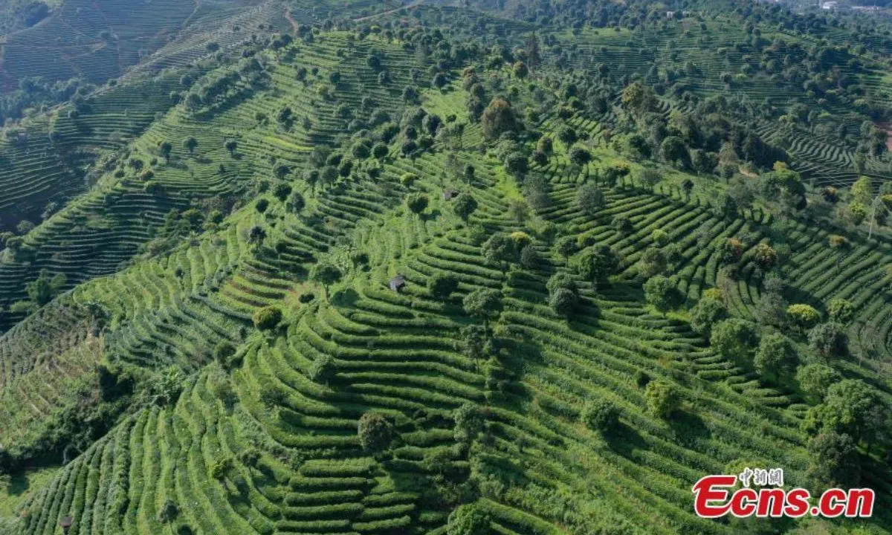

布朗山是云南著名的古茶产区，这里的古茶树树龄超过300年，根系深扎于红壤之中，自然吸收山间矿物质，造就独一无二的茶气与山野韵。每年春茶季，布朗族茶农按传统手法采摘一芽两叶，石磨压制成饼，历经时间转化，越陈越香。
Why This Tea
古树根系发达，微量元素丰富，茶气足，层次感强，非台地茶可比。
手工采摘、杀青、石磨压制，保留茶叶天然活性，适合长期存放。
生茶经过时间转化，香气与滋味持续升华，是可以喝的"古董"。
Taste Profile
新茶苦涩中带清凉回甘，茶气足，喉韵深；存放3年以上则转为醇厚，香气渐显，甜润感增强。
Specifications
| 品名 | 布朗山古树普洱生茶 |
| 产地 | 云南省西双版纳州布朗山 |
| 树龄 | 300年以上古树 |
| 采摘时间 | 春茶（清明前后） |
| 规格 | 357g / 饼（7饼/提，12提/件） |
| 压制工艺 | 传统石磨压制 |
| 存储方式 | 通风干燥避光，忌异味 |
| 保质期 | 适宜长期存放，越陈越香 |
Brewing Guide
沸水温润茶具
5~7g/100ml
润茶5秒出汤
前5泡10秒出
可冲泡15泡+
Choose Your Size